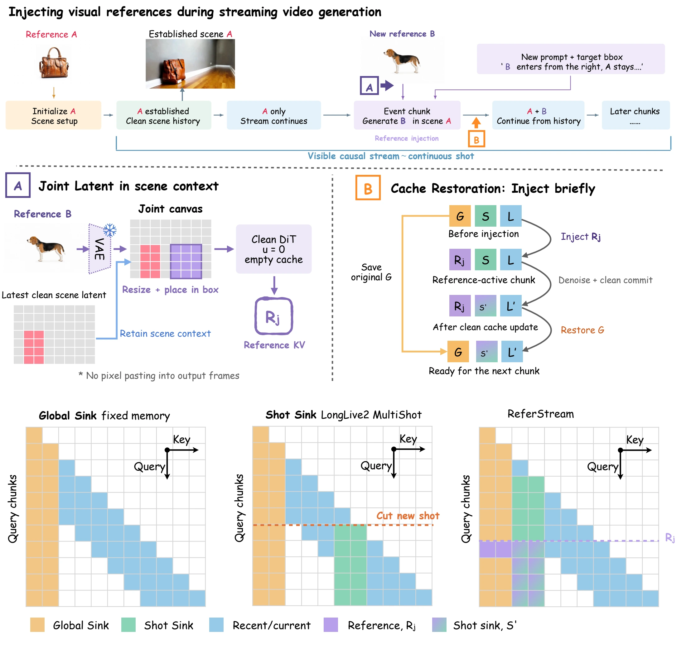
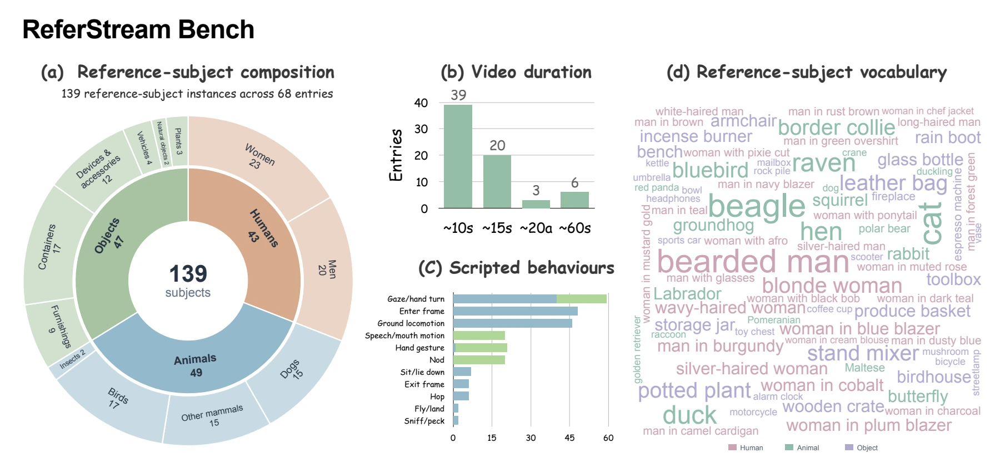

Joint Latent
Place reference latents in target regions of the latest clean scene latent. Reference features are extracted in the context of the scene into which the subject will enter.
Interactive video generation
Bring a new subject into a video while it is being generated.
New references arrive at user chosen times. The existing story continues.
Reference arrives. The scene evolves.
Recorded generation examples
Reference images on the left · Result on the right
Loading demos…
Establish a sceneGenerate with the initial reference.
Supply a new referenceIntroduce visual information during the stream.
Continue togetherPreserve the subjects and scene already established.
A reference does not have to
arrive before the video starts.
Most subject conditioned video generators receive their visual references before generation begins. Streaming generators can respond to new text, but introducing a specific new visual subject also requires integrating its appearance with an existing scene.
ReferStream studies this interaction: inject newly supplied visual references into an ongoing video, preserve established subjects and scene content, and leave previously emitted frames fixed. It operates on a frozen generator, without additional training.
Meet the next subject.
Continuous shots, evolving casts,
and scenes that carry on.
InShot introduces subjects within one continuous shot. MultiShot introduces references across shot transitions.
No matching examples. Try “cat”, “garden”, or another filter.
Integrate the reference.
Keep the scene.
Two complementary operations control how a new reference enters the generator’s memory.

Place reference latents in target regions of the latest clean scene latent. Reference features are extracted in the context of the scene into which the subject will enter.
Use the reference features to condition the injection chunk, then restore the overwritten global cache entries. The newly generated history remains available to carry the subject forward.
Evaluate the arrival.
And what stays.
Reference arrival changes what information is available to a streaming generator. ReferStream Bench pairs visual references with evolving prompts and explicit subject presence annotations, covering both InShot and MultiShot generation.
Evaluation considers new subject fidelity and established subject preservation alongside video quality, text adherence, and count accuracy.
Read the benchmark and evaluation protocol
Reference
@misc{xu2026referstream,
title={ReferStream: Interactive Subject Injection for Streaming Video Generation},
author={Shuolin Xu and Guanyuan Li and Boyu Li and Peng-Tao Jiang and
Hongchuan Yu and Xiaobin Hu and Shuicheng Yan},
year={2026},
howpublished={Project page},
url={https://xushuolin.github.io/ReferStream/}
}